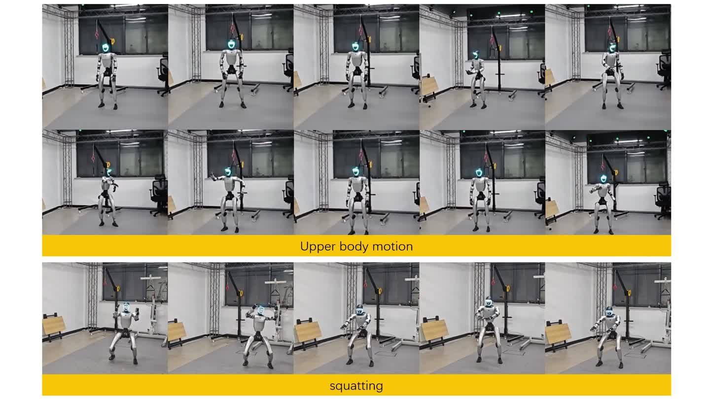
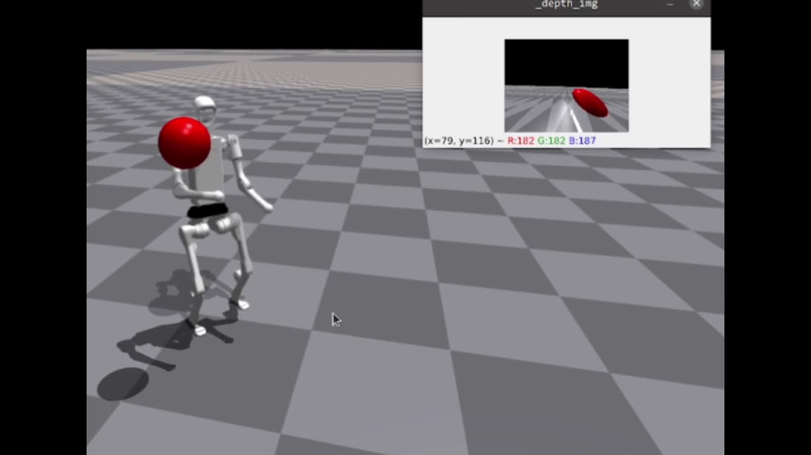
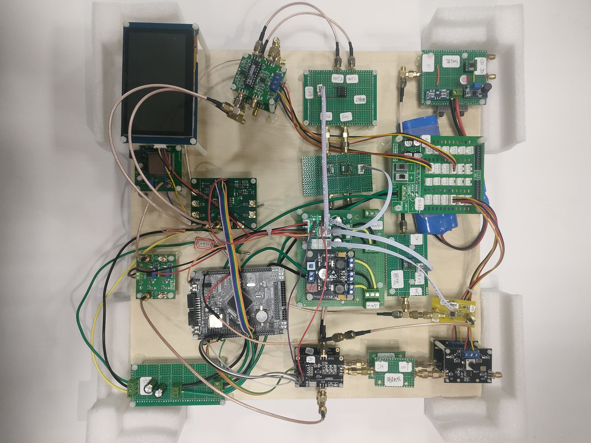

Learning Asynchronous Upper-body Task-space Trajectory Tracking Policy for Humanoid Robots
面向低频稀疏规划参考的异步跟踪，通过 MPC 补全与自引导进行任务后训练。包含仿真、在线规划和实机评测。
Robotics engineering student at Zhejiang University.
My work focuses on humanoid motion planning, whole-body control, and learning from motion.
关注人形机器人的运动规划与全身控制，也记录嵌入式系统与电子设计方面的实践。

面向低频稀疏规划参考的异步跟踪，通过 MPC 补全与自引导进行任务后训练。包含仿真、在线规划和实机评测。

结合任务数据生成、引导扩散规划和教师–学生全身跟踪，实现视觉条件下的人形机器人目标到达。

公开作品集。三点控制器与 RCar 目前展示论文与演示，研究代码暂未发布；电赛代码与设计资料见原项目。